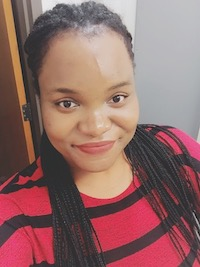

DMS Majors
Jennifer
It wasn’t until I got into university and took CSC 170 during my first year that I realized the importance of the code that I was messing with when changing the numbers and letters from the Tumblr blog themes. I was very interested in the class and was thoroughly excited to learn as much as I could while taking the course. I could also see the career path that I could follow if I were to gain more knowledge in the area of creating websites. But I soon realized that I wanted to do more. I realized the potential that the digital could have for my creativity. And that pretty much explains why I am now a Digital Media Studies major. It’s where I can get to show my skills and learn more about all things digital and to keep on doing my own kind of digital composition of turning the ideas that I have in my head into digital pieces.
Katty

As I progress through this major, it's exciting to be able to move beyond the introductory courses and choose others that are unique to the topics that I am interested in. This semester I will be taking The Art of Film and Modern Architecture, both of which are subjects that are very new to me, but I am eager to learn more about. I am also continuing this CSC web development series, after taking CSC 170 last spring, and although I do not intend on pursuing computer science as a career, I think the fundamental skills learned are invaluable as the world becomes more digitized and driven by technology.
Other Majors
Andrew Thankson
After graduating high school, I was faced with the decision of studying in my home country, Ghana, or apply to schools outside my home country. I decided to give the latter choice a shot. I took my SATs, wrote lots of essays and ended up applying early decision to the University of Rochester. I got in right away and accepted to go there as it was one of the top schools I was looking to attend. I arrived at college the summer before the start of my first year to participate in an early connections program called the Summer Start Program which was geared at helping students learn more about the University's campus, make early connections and also get a feel of college classes. I took classes in Engineering, Writing and also in College Success. It was during this period that I decided to switch my intended major from Electrical and Computer Engineering to Computer Science.